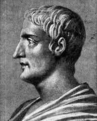
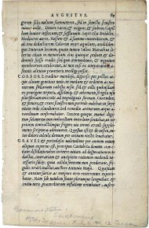
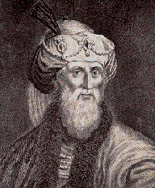

Исторические свидетельства существования Иисуса Христа
Существуют ли какие-то исторические доказательства относящиеся к жизни Иисуса Христа или о Нем повествуется только в Новом Завете.
Новый Завет, как и вся Библия, является не только священной книгой для христиан, но и надежным историческим документом для историков. Достоверность Библии как исторического источника рассматривается в статье Историческая достоверность Библии.
Но свидетельства о жизни Иисуса мы находим не только в Новом Завете. Многие древние историки 1-2 века нашей эры упоминают об Иисусе Христе тоже.
Тацит (56 - 117 гг.) - древнеримский историк, упоминает о Христе и христианах в своем историческом труде под названием Анналы
. Он описывает то, как римский император Нерон подверг христиан ужасным преследованиям, чтобы таким образом скрыть свою причастность к пожару в Риме (64 г). В частности, он пишет следующее:
Но никакими человеческими усилиями, ни щедростью императора, ни обращением к божествам, невозможно было остановить слух, что пожар был совершен по его приказу. Поэтому, чтобы избавиться от этих подозрений, Нерон возложил вину и подверг изощренным пыткам тех, кого все ненавидели за их мерзости, и кого толпа называла Христианами. Христос, от имени которого происходит это название, был казнен прокуратором Понтием Пилатом во время правления Тиберия. Это зловредное суеверие было подавлено на время, но теперь оно стало снова прорываться наружу, и не только в Иудее, где это зло изначально возникло, но даже и в Риме, куда со всего мира стекается все подлое и постыдное и где оно становится популярным. Таким образом, сначала арестовали всех, кто открыто признал себя принадлежащим к этой секте. Затем, по их показаниям, огромное число людей было осуждено, не столько за поджог города, сколько за их ненависть к человечеству. Во время их казней над ними всяческим образом издевались. Их покрывали шкурами диких зверей, чтобы собаки растерзали их насмерть, их распинали на крестах, или обрекали на сожжение, поджигая их тела с наступлением темноты для ночного освещения.[1]
Даже чтение этих строк несомненно наводит ужас. Но, несмотря на страшные преследования, которым подвергались христиане в Римской империи в течение почти трех столетий, христианство не прекратило свое существование. Наоборот, в этот период времени число христиан невероятным образом быстро увеличивалось.
По необъяснимым с человеческой точки зрения причинам, в самых неблагоприятных условиях, учение Иисуса Христа завоевывало сердца все большего количества людей. Вскоре, его влияние настолько возросло, что даже один из римских императоров, Константин, тоже принял христианство, и в 313 году он издал указ прекративший все преследования христиан.
Светоний (около 75 - 150 гг.) - древнеримский писатель и историк, написавший труд под названием Жизнь двенадцати цезарей
, упоминает о происходивших гонениях на христиан тоже. В Книге 6, посвященной жизни императора Нерона, Светоний пишет о нем:
Он подверг наказанию Христиан, последователей нового зловредного суеверия.[2]
Также, в Книге 5, посвященной жизни императора Клавдия, историк пишет о нем следующее:
Так как среди Иудеев постоянно происходили какие-то волнения из-за Христа, то он (Клавдий) изгнал их из Рима.[3]
Кстати, об этом событии упоминается и в Новом Завете. В книге Деяния Апостолов говорится:
Клавдий повелел всем Иудеям удалиться из Рима. (Деяния 18:2)
Иосиф Флавий (37 - 100 гг.) - Иудейский военачальник и историк, служивший римским советником при трех императорах. В своем произведении Иудейские Древности
он пишет:
В это время жил Иисус, мудрый человек, если, конечно, вообще его можно назвать человеком. Потому что он совершал удивительные вещи, будучи учителем людей, которые охотно воспринимали истину. За ним следовало много людей, как из иудеев, так и из других народов. Он был Христос. Затем Пилат, по настоянию наших правителей, приговорил его ко кресту. Но те, кто любили его раньше, продолжили следовать за ним, потому что на третий день он явился им живым снова. Это было предсказано о нем Божьими пророками, также как и многие другие его чудеса. И так называемые христиане существуют до сих пор, они именуют себя так от его имени.[4]
Читать дальше >>Он (первосвященник) созвал иудейский синедрион и привел к ним Иакова, брата Иисуса, называемого Христом.[5]
Еще о Библии:
- о Библии:
Другие статьи в разделе Наука о Боге
:
- о Боге:
Список литературы:
- [1] Tacitus. Annals 15.44. Латинский текст и перевод на англ. представлен на sacred-texts.com/cla/tac/a15040.htm
- [2] Suetonius. Book 6, 16.2. Текст на латыни с переводом на англ. представлен на penelope.uchicago.edu/Thayer/E/Roman/Texts/Suetonius/12Caesars/home.html
- [3] Suetonius. Book 5, 25.4, ссылка та же.
- [4] Flavius Josephus. The Judean Antiquities 18.3.3. Текст на англ. представлен на sacred-texts.com/jud/josephus/ant-18.htm
- [5] Flavius Josephus. The Judean Antiquities 20.9.1. Текст на англ. по той же ссылке.